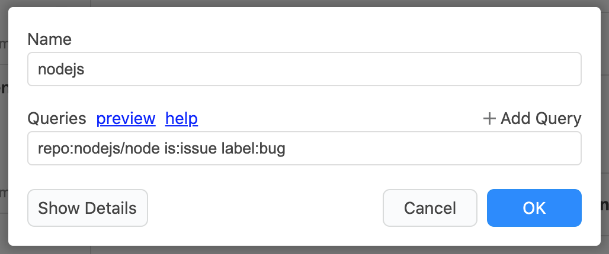
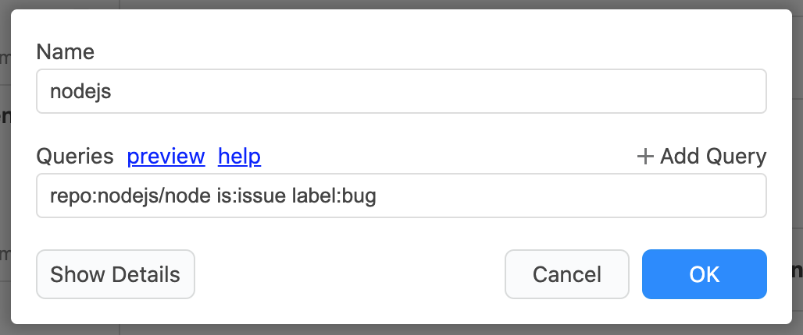
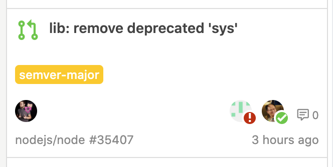

Stream
You can use the GitHub Search
query to create various criteria, such as issues I created, pull requests of nodejs/node,
bug labeled issues, etc. to view issues and receive update notifications.
Details are here or ja.


Unread Management
Issues/PRs Information
Quickly see the issue's open/close, label, milestones and assignments.
It also shows the review status of the pull request (approved, request changed, commented) along with the reviewer.

Searching
Integration with GitHub Features